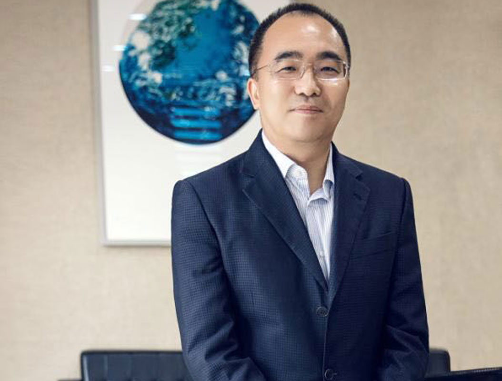

发布：2017-09-29 来源：中国经营网
9月25日，中共中央、国务院《关于营造企业家健康成长环境弘扬优秀企业家精神更好发挥企业家作用的意见》(以下简称《意见》)公布。《意见》提出营造“鼓励创新、宽容失败”的文化和社会氛围，在企业家群体中引发极大共鸣。

“《意见》的出台将助推中国民营经济进入新时代。”对于这部系统完整地鼓励、倡导企业家精神的纲领性文件，身兼武汉市工商联主席的卓尔控股董事长阎志在接受《中国经营报》记者采访时表示，尤其是在中央层面首次提出“鼓励创新、宽容失败”，有助于激发企业家创业创新活力，直击企业家精神的内核。
阎志认为，《意见》从营造环境、激发活力、正面激励、弘扬导向、务实服务、加强培养等方面出发，全方位体现了对企业家的尊重与保护、爱护与关怀，全面激发了企业家精神。
“永不停步的进取心和高度的社会责任感，是企业家最宝贵的精神。”阎志表示，企业家不断求索、不断创新，是社会进步的重要原动力。
团队建设是打破坚冰、磨练意志、熔炼团队的好方法。在培训期间大家通过破冰小游戏彼此熟悉，增强团队的凝聚力，促进团队的协作。在梁子湖龙湾度假村的怡人环境里，一共开展了自行车慢骑比赛、拔河比赛、沙滩足球等拓展项目。奋力，只为团队最终的胜利努力。午餐自助烧烤，也让大家感受到了分享与感恩。此次拓展活动充分让新员工们感受到了合作的重要性以及团队的温暖，团结才有力量，合作才能共赢。
武汉市今年以来提出大力发展新民营经济，拓展新技术、新产业、新业态、新商业模式等“四新经济”的政策举措，与《意见》大力倡导创新的精神高度契合。阎志认为，在当前，企业创新的主要表现形式就是“四新经济”，可以说，《意见》不仅带来民营经济发展的春天，也将开启中国新民营经济的新时代。
在阎志看来，武汉市今年以来聚焦聚力打造全国新民营经济聚集地，举全城之力营造良好的市场、法治环境和尊重激励创新创业的社会氛围，出现了较为显著的先发领跑优势。在以互联网产业化、工业智能化、大数据为核心的新经济时代，武汉有望成为全国新民营经济发展的典范。